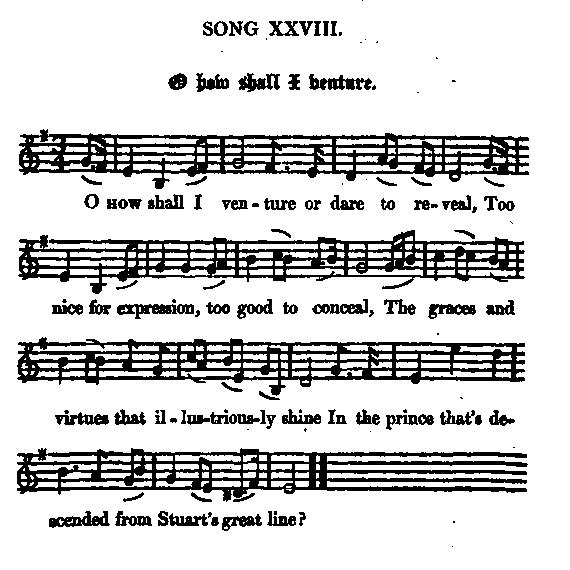

O How shall I venture
O tenterai-je
Eulogy of the Old Pretender or of Prince Charles
from "The True Loyalist" (1779), Ritson's "Scotish Songs" (1794) and Hogg's "Jacobite Relics, vol. 2" (1821)
Tune - Mélodie"Alloa House" as stated in the "True Loyalist", page 12 or "Alloway -house" in Ritson's "Scotish Songs" Vol II, p.105, 1794)
from Hogg's "Jacobite Relics" 2nd Series N°28, page 57, 1821
Sequenced by Christian Souchon
|
To the tune:
"Was likewise copied from Mr Moil's book of manuscripts, and is rather a commonplace song. The air was set to it at random, being an original one composed by the too little celebrated Mr Oswald , [the editor of the "Caledonian Pocket Companion" between 1743 and 1759"] to whom Scottish music was so much indebted." Hogg in "Jacobite Relics, Volume II" (page 287). In the "Towneley Hall MSS" edited by the Rev. Alexander B. Grosart in the volume entitled "English Jacobite Songs and Satires" (1877) the song is named "A Song, Tune Holloway House", instead of "Alloa or Alloway House", which are the spellings of the non-Jacobite song included in the "Scots Musical Museum" (vol I, P.224) (the modern spelling of the town, west of Stirling is "Alloa"). This song begins with "The Spring returns and clothes the green plains". It was written by the Rev. Dr Alexander Webster , minister in Edinburgh. The song became a favourite in England. The present Jacobite song is given in "Loyal Songs" (1750 p.35), Herd (1776, vol.i, p.176), "The True Loyalist", 1779, p.12, Ritson's "Scotish Songs" (P.272) and in Hogg's "Relics", vol. 2, p.57. Grosart's version has various readings from Hogg ("ages" for "poets" in st. 3, "shall be compelled" instead of "glad to obey" in st. 4...). The Rev. Grosart writes: "Two stanzas not in the [Towneley Hall] MS or anywhere else were, Hogg, after his manner, doubtless himself composed". How indecorous for a clergyman to spread slanderous gossip! Not only Hogg's version, but also "The True Loyalist" published in 1779 have these two additional stanzas (5 and 6)! |
 |
A propos de la mélodie:
"Encore un chant tiré du recueil de manuscrits de M. Moil, sur un air passe-partout. Cet air, choisi au hasard, a été composé par Oswald , musicien trop méconnu [éditeur du "Vadémécum du Calédonien" entre 1743 et 1759], à qui la musique écossaise doit tant." Hogg in "Jacobite Relics, Volume II" (page 287). Sans le manuscrit "Towneley Hall" présenté par le Révérend Alexander B. Grosart dans le volume intitulé "English Jacobite Songs and Satires" (1877), le morceau s'appelle "Chant, sur l'air de "Holloway House" au lieu de "Alloa ou Alloway House", qui sont les graphies que l'on trouve dans le "Scots Musical Museum" (vol. I, p. 224) (l'orthographe moderne de cette bourgade à l'est de Stirling est "Alloa"). Ce chant non-Jacobite commence ainsi: "Le printemps revient et revêt les vertes plaines". Il fut composé par le Révérend Dr Alexander Webster , pasteur à Edimbourg. Ce chant devint un air favori des Anglais. Le présent chant Jacobite se trouve dans les "Loyal Songs (1750, p.35), chez Herd (1776, vol. i, p.176), dans "le Vrai Loyaliste" (1779), p.12, dans les "Scotish Songs" de Ritson (p.272) et dans les "Reliques" de Hogg, vol. 2, p.57. La version de Grosart présente des différences par rapport à Hogg ( "âges" au lieu de "poètes", strophe 3 , "contraints" au lieu de "fiers de servir", strophe 4...). Le Révérend Grosart écrit: "Deux couplets absents du manuscrit [Towneley Hall] ou de toute autre version se trouvent chez Hogg qui, suivant sa marotte, les a sans aucun doute composées lui-même". Ce vénérable ecclésiastique répand des médisances! Non seulement la version de Hogg, mais encore "Le vrai Loyaliste" publié en 1779 comportent ces deux couplets supplémentaires (5 and 6). |

|
O HOW SHALL I VENTURE
1. O how shall I venture or dare to reveal, Too nice for expression, too good to conceal, The graces and virtues that illustriously shine In the Prince that's descended from Stuart's great line ? 2. O could I extol as I love the great name, Or sound my low strain to my Prince's great fame, In verses immortal his glory should live, And to ages unborn his merit survive. 3. O thou great hero, true heir to the crown, The world in amazement admires thy renown: Thy princely deportment sets forth thy great praise, In trophies more lasting than ages can raise. 4. Thy valour in war, thy conduct in peace, Shall be sung and admir'd when division shall cease; Thy foes in confusion shall yield to thy sway, And those that now rule shall be glad (taught) to obey. 5. May the heavens protect him, and his person rescue From the plots and the snares of the dangerous crew; May they prosper his arms with success in fight, And restore him again to the crown that's his right. 6. Then George and his breed shall be banish'd our land, To his paltry Hanover and German command; Then freedom and peace shall return to our shore, And Britons be bless'd with a Stuart once more. Source: "The Jacobite Relics of Scotland, being the Songs, Airs and Legends of the Adherents to the House of Stuart" collected by James Hogg, published in Edinburgh by William Blackwood in 1819. |
O HOW CAN I PUBLISH
1. O! how can I publish or strive to reveal, Too nice for expression, too good to conceal, The graces and virtues which illustrious do shine In the P[rinc]e that's descended of Stuart's great line ? 2. Could I but extol thee as I love thy dear name, Or suit my low strain to my P[rinc]e's high fame, In trophies eternal thy glory I'd raise, And to ages unborn thy merits should live. 3. But, O thou brave hero, great heir of this crown, The world quite astonish'd admires thy renown: Thy princely deportment shews forth thy great praise, In trophies more lasting than poets can raise. 4. Thy valour in war, and thy conduct in peace, Shall be sung and admir'd when division shall cease; Thy foes in confusion shall yield to thy sway, And he who now rules shall be forc'd to obey. 5. May the heav'ns in mercy thy person secure From the plots and the snares of tyrannical pow'r; May they prosper thy arms with success in fight, And restore thee at last to the crown that's thy right! 6. And when G[eorg]e and his brood are banish'd this land, To their poultry Hannover and German command; Then freedom and peace shall return to this shore, And Britons be rul'd with S[tuart]s evermore. From "The True Loyalist", page 13, 1779 |
TENTERAI-JE
(Traduction de la version de Hogg) 1. Tenterai-je - l'oserai-je - de dire, quand manquent les mots, - Mais ce serait sacrilège que les enfouir sous le boisseau - Les illustres vertus et les grâces que je vois luire avec un tel éclat Dans celui que la race insigne des Stuarts engendra? 2. Pourrai-je restreindre la mesure de ma vénération du grand nom, Ou chanter d'une voix qui murmure un prince digne d'admiration? Il convient que sa gloire survive en des chants d'impérissable souvenir Qui par leurs accents disent son mérite au monde à venir. 3. Héros comme aux temps antiques, de la Couronne l'héritier Dont le renom magnifique se répand dans le monde entier. Ta conduite est celle qu'on vénère chez un prince jaloux de son honneur, Trophée moins éphémère, dont le temps accroît la valeur. 4. Ta vertu quand la guerre fait rage et ta conduite quand règne la paix, Quand se sera dissipé l'orage, comme exemples seront cités. Tes ennemis laissant leurs intrigues accourront tous se soumettre à ta loi Et ceux qui nous dirigent seront fiers de (apprendront à) servir sous toi. 5. L'aide de la Providence sauve ta personne à jamais Des complots que cette engeance perfide se plait à tramer! Puisse-t-Elle assurer à tes armes d'être victorieuses au combat Et rendre la couronne à qui celle-ci revient de droit! 6. Alors, suivi de tous les siens, George aura tôt fait de quitter le pays, Pour rejoindre son médiocre Hanovre et tous ses germaniques soucis. Puis on verra regagner nos rives sacrées la paix avec la liberté. O Britanniques, vive Stuart à qui l'on doit ces bienfaits! (Trad. Christian Souchon (c) 2010) |